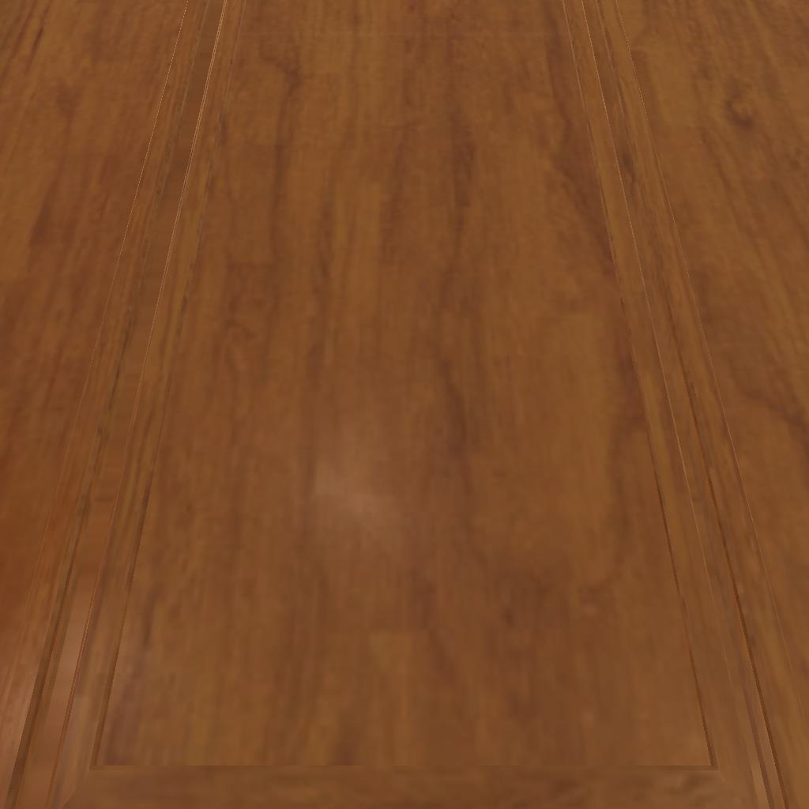

---------------------------------------------------------task: 24---------------------------------------------------------
--------------------------------------------------------------------------------------------------------------------------------------------------------------------
--------------------------------------------------------------------------------------------------------------------------------------------------------------------
Step:--------------------------------------------------------------------------3-------------------------------------------------------------------------------
----------------------------------------
VLM Prompt:
Image1:
Image2:
Image3:
**Instruction**
1. Analyze the provided images to identify all visible household objects and compare the difference between images (e.h. whether the object is opened or not and taken on hand or not), focusing on those relevant to the task description "heat some tomato and put it in fridge."
2. Use the analysis of images and the task hint "The agent must find an object of the desired type, pick it up, go to a microwave, heat the object with the microwave, then find the correct location to place it, and put it down there. The agent does not need to use the microwave button or open the microwave to heat the object, and the agent just needs to do action that is "heat the object with the microwave"." to answer the question: what is the most reasonable action in the choices for the task description "heat some tomato and put it in fridge"?
3. Decide and write the answer using the template: The answer is: (i): , where i is the real number. If there is no desired object in images, search every place based on **Initial Observation** to find the object. And if no one is exactly correct, choose a similar answer.
**Initial Observation**
You are in the middle of a room. Looking quickly around you, you can see cabinet (1-14), countertop (1-2), microwave (1), drawer (1-5), sink (1), sinkbasin (1), coffeemachine (1), stoveburner (1-4), toaster (1), fridge (1), diningtable (1), garbagecan (1), safe (1)
**Answer Choices**
(1): go to cabinet 3
(2): go to countertop 1
(3): go to cabinet 4
(4): go to cabinet 5
(5): go to microwave 1
(6): go to cabinet 6
(7): go to drawer 1
(8): go to drawer 2
(9): go to drawer 3
(10): go to cabinet 7
(11): go to cabinet 8
(12): go to sink 1
(13): go to sinkbasin 1
(14): go to coffeemachine 1
(15): go to cabinet 9
(16): go to cabinet 10
(17): go to drawer 4
(18): go to cabinet 11
(19): go to stoveburner 1
(20): go to stoveburner 2
(21): go to stoveburner 3
(22): go to stoveburner 4
(23): go to cabinet 12
(24): go to toaster 1
(25): go to drawer 5
(26): go to countertop 2
(27): go to cabinet 13
(28): go to cabinet 14
(29): go to diningtable 1
(30): go to garbagecan 1
(31): go to safe 1
(32): open cabinet 2
(33): close cabinet 2
(34): examine cabinet 2
**Answer**
Let's think step by step by following the instructions.
----------------------------------------
----------------------------------------
Original Response:
First, we have to analyze the provided images. In Image 1, we see what appears to be a closed door or a cabinet, there are no clear indicators of objects or contents inside. In Image 2, we see a wooden surface, likely a countertop or a table with no objects on it. Image 3 shows the same wooden surface at a different angle with a wall or cabinet in the background. None of the images show any tomato or microwave, which are necessary for the task.
Based on the initial observation, we know the location of the microwave (1) and the fridge (1). Since we need to heat some tomato, our first step would be to find the tomato. The tomato could be stored in cabinets, drawers, or the fridge. The answer choices do not include "go to fridge," so we can assume the agent already knows the tomato is not there.
Given the answer choices and the task description, the most reasonable action would be to search the cabinets or drawers, as these are common places to store food items such as tomatoes. Since the task description does not specify which cabinet or drawer may contain the tomato, we have to make an educated guess. Cabinets are more likely to contain food items, so we will prioritize them over drawers.
Out of the available cabinet options, cabinet 3 and cabinet 4 are the closest numbers to the microwave (1) mentioned in the initial observation, which could indicate proximity and thus higher likelihood of containing food items for cooking.
The answer is: (1): go to cabinet 3. If the tomato is not there, the agent should continue searching other cabinets and drawers based on the initial observation.
----------------------------------------
----------------------------------------
>>> Refine Original VLM Response and Get Pure Action: go to cabinet 3
----------------------------------------
-----------------------------------------------------------------
Running time: 12.369312286376953 seconds
Total Money: 14.719069999999999
-----------------------------------------------------------------
-----------------------------------------------------------------
Text Observation:You arrive at loc 2. The cabinet 3 is closed.
-----------------------------------------------------------------
UNSUCCEED